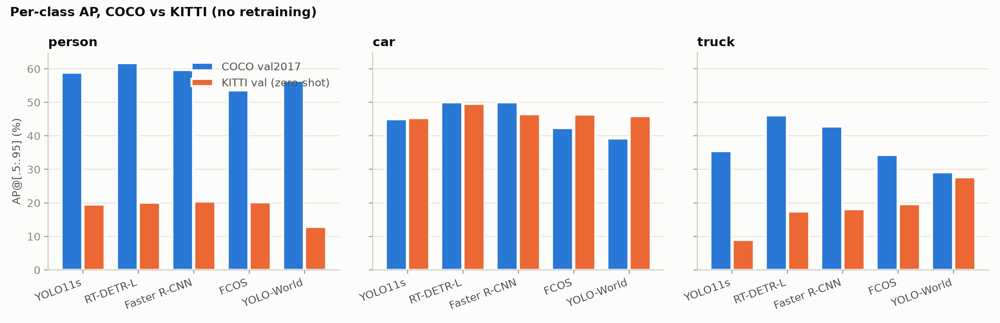
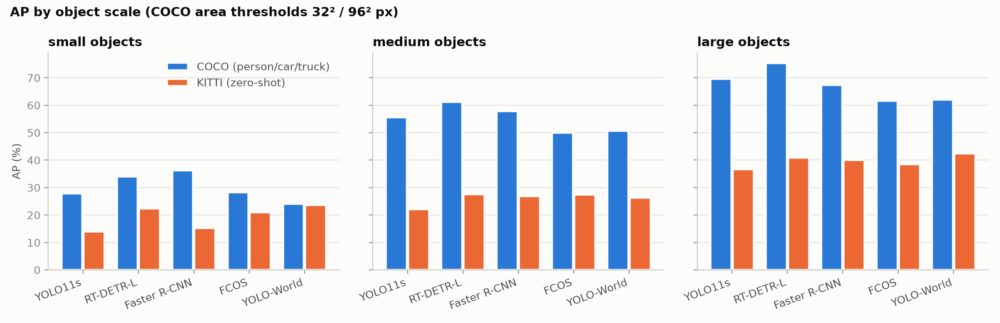
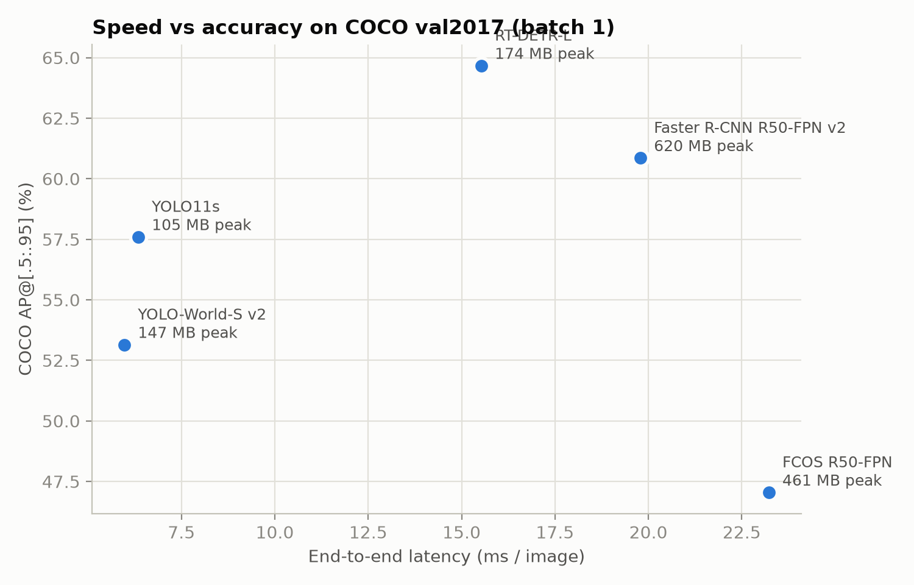
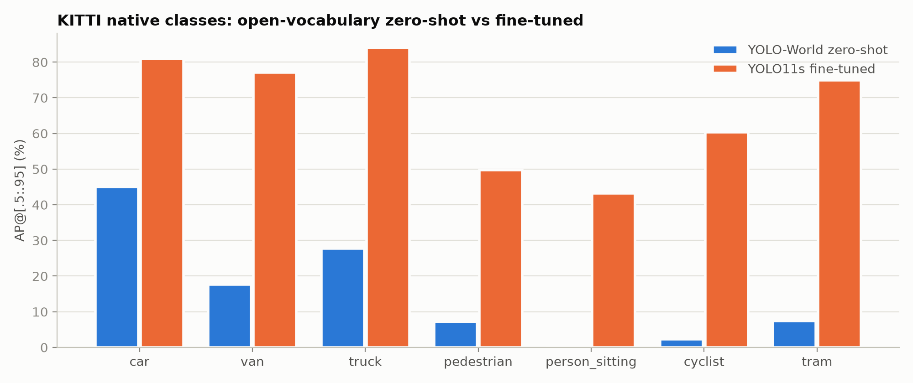
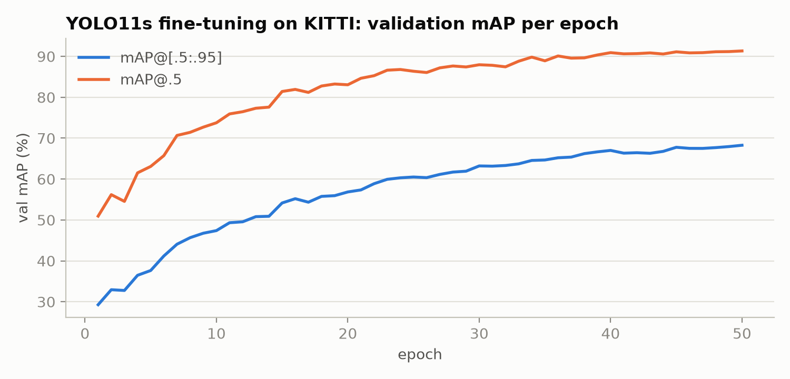
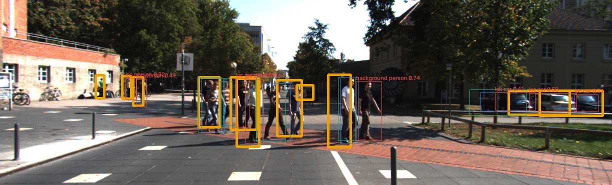
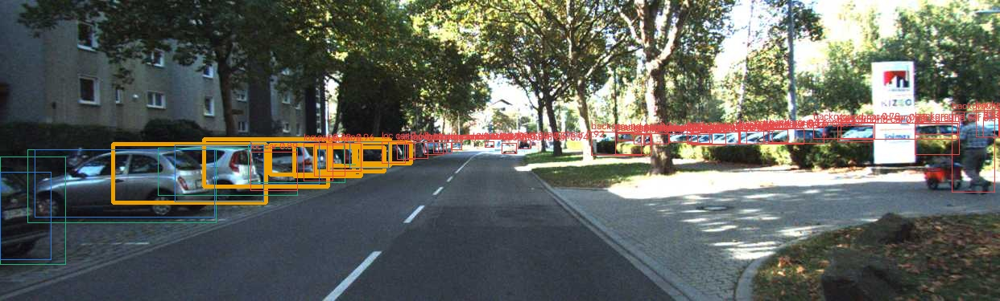

Detectors are usually compared on COCO, but a robot sees a road, not COCO. The question is: how much of a COCO-trained detector's skill transfers to a driving dataset, which classes and object sizes break, and is the fix a better architecture or in-domain data? The approach is a controlled experiment with one evaluation harness (pycocotools, identical thresholds) for every model. The harness was validated by reproducing known COCO numbers before any KITTI number was trusted, and automated sanity checks gate every result (109 PASS / 0 FAIL). Four analyses follow: cross-dataset generalization by class and scale, architecture plus speed–accuracy, closed- vs open-vocabulary detection, and fine-tuning. A resolution ablation, a failure analysis and four targeted verification experiments (Sections 6.1, 6.3 and 8) complete the study.
| Model | Family / key idea | Checkpoint | Input | Params (M) | Post-proc. | Published COCO mAP |
|---|---|---|---|---|---|---|
| YOLO11s [11,13] | One-stage, anchor-free CNN | yolo11s.pt (Ultralytics) | 640 | 9.5 | NMS | 47.0 [13] |
| RT-DETR-L [8] | Transformer decoder, set prediction (DETR [7]) | rtdetr-l.pt | 640 | 33.0 | none (1-to-1 matching) | 53.0 [14] |
| Faster R-CNN v2 [3,4,5] | Two-stage, anchor-based, FPN | torchvision COCO_V1 | 800 / max 1,333 | 43.7 | NMS | 46.7 [16] |
| FCOS [6] | One-stage, anchor-free, per-pixel + centerness | torchvision COCO_V1 | 800 / max 1,333 | 32.3 | NMS | 39.2 [16] |
| YOLO-World-S v2 [9] | Open-vocabulary, CLIP text prompts [10] | yolov8s-worldv2.pt | 640 | 12.8 | NMS | 37.7 (zero-shot) [15] |
| YOLO11s-KITTI | YOLO11s fine-tuned on KITTI train | own run (best.pt) | 640 | 9.4 | NMS | – |
results/tables/benchmark.md; YOLO11s 9.46 M vs fine-tuned 9.43 M in results/metrics/diagnostics/param_counts.txt, which differ only in the class head). torchvision models resize to a short side of 800 px unless the long side would exceed 1,333; KITTI images hit that cap and become about 1333×402. The fine-tuned head has 8 outputs (KITTI's 7 evaluated classes plus Misc, which is trained but never scored).Datasets. COCO val2017 [1]: 5,000 images, 80 classes. KITTI 2D object [2], Ultralytics release [18]: the 7,481 labelled training images split into 5,985 train / 1,496 val. All KITTI numbers below are on this val split, which was never used for training. The release drops KITTI's DontCare regions, which matters in Section 7. Excluding Misc, KITTI val holds 7,920 boxes, of which car makes up 72% (5,716). Under COCO's absolute area thresholds (32²/96² px), KITTI cars are 17% small, 53% medium and 30% large.
Taxonomy mapping. COCO models predict COCO classes, so KITTI ground truth was relabelled
(Table 2). This follows the KITTI devkit's "neighbouring class" idea: classes with no clean COCO counterpart
become ignore regions (iscrowd=1). A prediction on an ignore region is neither rewarded nor
punished. Dropping such a class instead would turn every correct "car" box on a van into a false positive. Only
person, car and truck are scored, and every COCO→KITTI comparison uses the same three classes on COCO
("COCO 3-cls AP"), never the 80-class mAP.
| KITTI class | COCO class | Role | Val boxes | Reason |
|---|---|---|---|---|
| Car / Truck / Pedestrian | car / truck / person | scored | 5,716 / 223 / 921 | same concept |
| Van | car | ignore region | 555 | COCO has no van; models call vans car or truck |
| Person_sitting, Cyclist | person | ignore region | 36, 352 | KITTI cyclist box = rider + bike; a COCO person box covers only the rider |
| Tram, Misc | – | dropped | 117, n/c | no COCO equivalent / undefined |
configs/experiments.yaml: taxonomy, docs/taxonomy_mapping.md). 6,860 boxes are scored and 943 are ignore regions. n/c = not counted: the dataset-statistics script only tallies evaluated classes, so the number of Misc boxes was not recorded. Models that output KITTI labels (YOLO-World with KITTI prompts, the fine-tuned model) map van→car and person_sitting→person, and are also scored on all 7 native classes.Hardware/software. NVIDIA GeForce RTX 5070 Ti (16 GB, driver 617.42), AMD Ryzen 9 9900X CPU (12 cores / 24 threads), 64 GB RAM, Windows 11 (WDDM
driver model); Python 3.12.16, PyTorch 2.11.0+cu128, torchvision 0.26.0, CUDA 12.8, cuDNN 9.19, Ultralytics
8.4.197, pycocotools 2.0.11. Full versions are captured automatically in every results/run_meta/*.json.
Inference and evaluation. All models use conf = 0.001 and at most 300 detections per image.
NMS IoU is each framework's default: 0.7 for the Ultralytics models (YOLO11s, YOLO-World, fine-tuned YOLO11s),
0.5 for Faster R-CNN's final per-class NMS (its RPN applies 0.7 to proposals), and 0.6 for FCOS. RT-DETR uses
no NMS. (The existing run_meta files record the config value 0.7, which only the Ultralytics models
receive; the pipeline now records each model's actual value.) A low confidence threshold is required for mAP: a deployment threshold such as
0.25 would cut the precision–recall curve short and lower AP. Metrics are COCO-style AP@[.5:.95] (the mean
of AP at IoU 0.50, 0.55, …, 0.95, each AP being the area under a 101-point interpolated
precision–recall curve), AP50, AP75, APS/M/L, AR100 and per-class AP, all from pycocotools [17].
These are COCO-style metrics on Ultralytics' image-level split of the KITTI training set, not official KITTI
benchmark results (which use IoU 0.7 for cars and 0.5 for pedestrians, with Easy/Moderate/Hard difficulty
levels), so they are not comparable to the KITTI leaderboard. Inference
is FP16 except FCOS, which runs in FP32 (Section 8). Qualitative and failure analysis uses conf = 0.30. YOLO-World prompts: the 80 COCO class names on COCO, and
car, van, truck, pedestrian, person sitting, cyclist, tram on KITTI (configs/experiments.yaml: prompts).
Latency protocol. Batch 1, images preloaded in RAM, end-to-end time (preprocess + network + NMS) with
torch.cuda.synchronize(). There are 200 untimed warm-up images, so every input shape has been seen
once, followed by 3 timed passes over 200 images. The reported latency is the median of the three pass means,
with the min–max range. Peak memory is torch.cuda.max_memory_allocated. Timing uses the
accuracy-run settings (conf = 0.001, up to 300 detections, the NMS settings above). This is the
worst case for NMS, so NMS-based models would run somewhat faster at a deployment threshold such as 0.25.
Fine-tuning. YOLO11s initialised from COCO weights, 50 epochs, image size 640, batch 16, early-stop
patience 15, seed 0, deterministic, Ultralytics default optimiser and augmentation. All 50 epochs ran, taking
1,490 s (24.8 min). The best checkpoint by Ultralytics validation was the last epoch, so selecting it on the val
split gave no extra advantage (results/metrics/finetune/results.csv, Figure 4b).
One config file (configs/experiments.yaml) defines every model, threshold, mapping and run. One
script runs the stages, and every run writes a metadata file with its exact command, thresholds, image count and
environment. The complete command log, including diagnostics, is docs/commands.md.
python run_all.py --quick # 2.5-min smoke test (25 images/run, 1-epoch fine-tune)
python run_all.py --stages prepare # COCO val2017 + KITTI, builds COCO-format KITTI GT
python run_all.py --stages predict evaluate # 5 models x {COCO, KITTI} + YOLO11s@1280 (14 min)
python run_all.py --stages finetune predict_ft evaluate # fine-tune YOLO11s on KITTI (29 min)
python run_all.py --stages benchmark failures analyze sanity # latency/memory, error analysis, tables, checks
# per-run equivalent, e.g.: python scripts/predict.py --model yolo11s --dataset kitti --imgsz 1280 --tag res1280
# python scripts/evaluate.py --run yolo11s__kitti --target kitti_cocomap
# python scripts/finetune.py # model.train() with the finetune: block of experiments.yaml
The exact command for every inference run is stored in the command field of its
results/run_meta/*.json. The fine-tuning arguments, as resolved by Ultralytics, are in
results/metrics/finetune/args.yaml.
Table 3 lists every run. Read the two COCO AP columns first: they show that the harness reproduces the published numbers, which is the precondition for trusting the KITTI columns.
| Model | COCO AP (published) | COCO AP (ours) | COCO AP50 | COCO 3-cls AP | KITTI AP | 95% CI | KITTI AP50 | KITTI AP75 | KITTI APS | KITTI APM | KITTI APL | KITTI AR100 |
|---|---|---|---|---|---|---|---|---|---|---|---|---|
| YOLO11s | 47.0 | 45.6 | 62.3 | 46.4 | 24.6 | 23.6–26.4 | 48.2 | 22.5 | 14.0 | 22.2 | 36.8 | 42.7 |
| RT-DETR-L | 53.0 | 52.8 | 71.2 | 52.6 | 29.0 | 27.5–31.1 | 53.8 | 27.4 | 22.4 | 27.6 | 40.9 | 55.6 |
| Faster R-CNN v2 | 46.7 | 47.0 | 68.1 | 50.8 | 28.3 | 26.9–30.3 | 54.4 | 27.3 | 15.3 | 26.9 | 40.0 | 54.7 |
| FCOS | 39.2 | 39.3 | 58.7 | 43.4 | 28.7 | 27.1–30.7 | 54.5 | 27.4 | 21.0 | 27.5 | 38.5 | 53.8 |
| YOLO-World-S v2 | 37.7 | 36.8 | 51.3 | 41.6 | 28.8 | 27.4–31.0 | 50.0 | 29.5 | 23.7 | 26.4 | 42.4 | 54.0 |
| YOLO11s @1280 | – | – | – | – | 26.9 | 25.6–28.8 | 51.0 | 25.1 | 21.9 | 25.2 | 36.3 | 47.0 |
| YOLO11s-KITTI (fine-tuned) | – | – | – | – | 71.6 | 70.3–72.9 | 93.0 | 80.2 | 58.3 | 71.4 | 80.7 | 77.1 |
predict(), which keeps one class per box; FP16 is another. Bold = best in column (the fine-tuned model). 95% CI = percentile interval from 1,000 image-level bootstrap [19] resamples of KITTI val (results/tables/bootstrap_ci.md); paired comparisons are in §6.2. COCO (80-class) AP75/APS/APM/APL: YOLO11s 49.3/27.8/50.1/62.5, RT-DETR-L 57.1/34.3/57.3/70.9, Faster R-CNN v2 51.3/31.2/50.8/60.4, FCOS 42.1/22.5/42.5/51.4, YOLO-World-S v2 39.8/20.6/40.5/48.9. Source: results/tables/main_results.md, results/sanity_report.md.| Model | COCO 3-cls | KITTI 3-cls | Drop | person | car | truck | |||
|---|---|---|---|---|---|---|---|---|---|
| COCO | KITTI | COCO | KITTI | COCO | KITTI | ||||
| YOLO11s | 46.4 | 24.6 | −21.8 | 58.8 | 19.5 | 44.9 | 45.3 | 35.5 | 9.0 |
| RT-DETR-L | 52.6 | 29.0 | −23.6 | 61.7 | 20.1 | 50.0 | 49.5 | 46.1 | 17.4 |
| Faster R-CNN v2 | 50.8 | 28.3 | −22.5 | 59.6 | 20.5 | 50.0 | 46.4 | 42.8 | 18.1 |
| FCOS | 43.4 | 28.7 | −14.7 | 53.5 | 20.2 | 42.4 | 46.4 | 34.3 | 19.7 |
| YOLO-World-S | 41.6 | 28.8 | −12.8 | 56.5 | 12.8 | 39.2 | 45.9 | 29.2 | 27.7 |
results/tables/domain_shift.md.
The shift is class-specific, not uniform (Table 4, Figure 1). Car AP is essentially unchanged
(−3.6 to +6.7), but person loses 33–44 points for every model and truck loses up to 29. A road
scene is therefore not "harder" across the board. What breaks is particular classes. A plausible reason for person
is that KITTI pedestrians are small, upright and often occluded, whereas COCO "person" covers every pose, crop and
context. Both detection and localisation suffer. AP50 itself falls (e.g. RT-DETR 74.8→53.8 on the three
classes), and the ratio AP75/AP50 on the same three classes drops from 0.69–0.76 on COCO to 0.47–0.51 on
KITTI for the closed-set models (YOLO-World 0.59). After fine-tuning it recovers to 0.86. Part of the loss is
therefore box placement that does not match KITTI's annotation convention, which in-domain training fixes. (Ratios
from per-class AP50/AP75 in results/metrics/*.json.)
Truck and vans (a mapping side effect). Of the confident (score ≥ 0.3) "truck" boxes, 48% (YOLO11s), 34% (RT-DETR) and 38% (Faster R-CNN) lie on a KITTI van. Only 13–20% hit a real truck. Because pycocotools applies ignore regions per category, and vans are ignored for car only, each such box is a truck false positive. A sensitivity check (Table 5) also marks vans as ignore regions for truck. Truck AP then rises by 5.7–11.1 points for every zero-shot model, which is 22–56% of the closed-set models' COCO→KITTI truck drop. The fine-tuned model is unaffected because it learned the van/truck distinction. Van confusion is therefore a large part of the truck drop, but not all of it: RT-DETR still loses 17.6 points (46.1→28.5). This check also refuted one of our own hypotheses: that YOLO-World leads on truck because its explicit "van" prompt keeps vans out of the truck class. It gains as much as the others (+9.2) and still leads afterwards (36.9 vs 28.5), so the cause of its truck advantage remains open. The main mapping was not changed after seeing results; Table 5 is reported only as a sensitivity analysis.
| Variant (KITTI val) | YOLO11s | RT-DETR-L | Faster R-CNN | FCOS | YOLO-World | Fine-tuned |
|---|---|---|---|---|---|---|
| Main mapping: truck AP / 3-cls AP | 9.0 / 24.6 | 17.4 / 29.0 | 18.1 / 28.3 | 19.7 / 28.7 | 27.7 / 28.8 | 83.9 / 71.6 |
| Van also ignored for truck: truck / 3-cls | 14.7 / 26.5 | 28.5 / 32.7 | 25.0 / 30.6 | 27.9 / 31.5 | 36.9 / 31.9 | 83.9 / 71.6 |
| Van scored as car: car AP (main → variant) | 45.3→43.8 | 49.5→48.1 | 46.4→44.6 | 46.4→45.3 | 45.9→45.3 | 80.9→80.8 |
results/tables/sensitivity_taxonomy.md; box counts in results/metrics/diagnostics/truck_on_van.txt). Treating vans differently moves car AP by only 0.1–1.8, so ignoring vans is not why some models score higher on KITTI cars than on COCO cars.Scale. A common expectation is that KITTI is hard because its objects are small. The data do not support this as the main explanation (Figure 2). Medium and large objects lose 32–60% of their COCO AP for every model (medium 45–60%, large 32–47%), and most KITTI ground truth is medium. Small objects vary widely, from 1% for YOLO-World (24.0→23.7) to 58% for Faster R-CNN (36.3→15.3). Doubling the input resolution of YOLO11s to 1280 (Table 6) raises APS by 7.9 points, but leaves APL flat and recovers only 2.3 AP overall. Pixels help small objects, but most of the gap lies elsewhere.

results/tables/domain_shift_scale.md).| YOLO11s on KITTI | AP | AP50 | APS | APM | APL | AR100 | Latency (ms) | Peak mem (MB) |
|---|---|---|---|---|---|---|---|---|
| imgsz 640 | 24.6 | 48.2 | 14.0 | 22.2 | 36.8 | 42.7 | 5.0 | 72 |
| imgsz 1280 | 26.9 | 51.0 | 21.9 | 25.2 | 36.3 | 47.0 | 5.6 | 79 |
results/tables/resolution.md).| Model | KITTI latency ms (range) | FPS | Peak mem MB | KITTI AP | COCO latency ms (range) | COCO peak MB | COCO AP |
|---|---|---|---|---|---|---|---|
| YOLO11s | 5.0 (5.0–5.0) | 200 | 72 | 24.6 | 7.2 (6.9–7.6) | 71 | 45.6 |
| YOLO-World-S v2 | 5.4 (5.4–5.4) | 185 | 144 | 28.8 | 6.2 (6.2–6.4) | 81 | 36.8 |
| RT-DETR-L | 12.2 (12.2–12.3) | 82 | 173 | 29.0 | 16.7 (13.7–18.8) | 143 | 52.8 |
| Faster R-CNN v2 | 16.4 (16.2–16.6) | 61 | 488 | 28.3 | 19.4 (19.3–19.7) | 637 | 47.0 |
| FCOS (FP32) | 18.8 (18.7–19.2) | 53 | 391 | 28.7 | 25.6 (25.5–26.2) | 501 | 39.3 |
results/tables/benchmark.md). Latency is end-to-end and includes each framework's own preprocessing and input size, so it compares deployable pipelines rather than bare networks. FCOS runs FP32, the others FP16. The fine-tuned YOLO11s was not benchmarked separately: it shares YOLO11s's architecture and input size, and only its class head differs.
Speed. On this GPU every model is real-time (>50 FPS). The one-stage YOLOs are 3.0–3.8× faster than the R50-FPN models, which also process about 4× as many pixels per KITTI image (see below) and use 2.7–6.8× the peak memory.
Accuracy rankings do not transfer. On the same three classes, the 11.0-AP spread on COCO (41.6–52.6)
shrinks to 4.4 AP on KITTI. A paired bootstrap (same resampled images for both models) finds Faster R-CNN, FCOS
and YOLO-World not significantly different from RT-DETR: each difference has a 95% interval containing 0,
e.g. YOLO-World −0.2 [−1.7, +1.4]. This does not prove they are equal, and only differences to RT-DETR
were tested. Only YOLO11s is clearly worse, at −4.4 [−5.5, −3.3]. (Differences are the observed
point estimates; bootstrap_ci.md lists bootstrap means, which differ by ≤0.1.) The zero-shot point
estimates also sit in the lower half of their own intervals, suggesting that resampling inflates AP slightly. YOLO-World is
last on COCO but statistically indistinguishable from the best on KITTI, at less than half RT-DETR's latency,
so it sits on the speed–accuracy frontier together with YOLO11s.
Input resolution is a confound in this comparison. A 1242×375 KITTI image is resized to about 1333×402 by torchvision (1.07× native) but to 640×193 for the Ultralytics models (0.52×), so Faster R-CNN and FCOS see roughly 4× more pixels. The YOLO11s 1280 ablation (Table 6: APS 14.0 → 21.9) shows how much resolution alone moves small-object AP.
NMS vs NMS-free. NMS-free RT-DETR is not measurably better than the NMS-based models on KITTI (above), and its AR100 (55.6) is close to Faster R-CNN's (54.7). On COCO it leads clearly (52.8).
YOLO-World takes class names as text and turns them into classifier weights with a CLIP text encoder. This lets
it be prompted with KITTI's own seven classes and scored natively, which a closed-set COCO model cannot do. It
transfers best overall (smallest drop, −12.8; best truck and small-object AP). But it is weakest on person
(12.8), and on native KITTI classes it reaches only 15.3 AP: pedestrian 7.1, cyclist 2.2, person_sitting 0.3,
tram 7.4. The prompt word matters. Replacing "pedestrian" with "person", with identical weights, raises person AP
from 12.8 to 17.5 (AP50 32.9→45.7), and removing the competing "person sitting"/"cyclist" prompts adds only 0.5
more (results/metrics/diagnostics/yoloworld_prompts.txt). One untested hypothesis is that "person" is far more frequent than
"pedestrian" in image–text training data, giving it a better-aligned text embedding. The reported
results keep the original prompts, since choosing prompts on the evaluation set would be tuning on test data.
Open vocabulary therefore buys flexibility and robustness for familiar objects, but not accuracy on
domain-specific categories (cyclist, tram).
| YOLO11s on KITTI | Zero-shot | Fine-tuned |
|---|---|---|
| 3-cls AP / AP50 / AP75 | 24.6 / 48.2 / 22.5 | 71.6 / 93.0 / 80.2 |
| person / car / truck AP | 19.5 / 45.3 / 9.0 | 49.8 / 80.9 / 83.9 |
| APS / APL | 14.0 / 36.8 | 58.3 / 80.7 |
| 7-class native AP | n/a (COCO labels) | 67.2 |
| Missed GT @conf 0.3* | 1,862 | 484 |
| Background FPs @conf 0.3* | 1,182 | 281 |
results/tables/finetune.md, results/failures/*/summary.json). For comparison, YOLO-World zero-shot reaches 15.3 native 7-class AP. *Counts at a fixed confidence depend on score calibration, which fine-tuning changes, so they illustrate the shift; the AP rows are the threshold-free comparison. Native per-class AP of the fine-tuned model: car 80.9, van 77.1, truck 83.9, pedestrian 49.7, person_sitting 43.3, cyclist 60.4, tram 74.9.
As Table 8 and Figure 4a show, 25 minutes of fine-tuning almost triples KITTI AP. The same YOLO11s network (all weights are fine-tuned; the only architectural change is the output layer, resized from 80 to 8 KITTI classes) goes from the worst zero-shot model to far ahead of every other model. Truck jumps from 9.0 to 83.9, and AP75 from 22.5 to 80.2. Our interpretation is that the zero-shot gap is mainly a mismatch of label definitions, box conventions and domain appearance (what counts as a truck vs a van, how tightly a pedestrian is boxed, KITTI's camera and scenes), not a lack of model capacity. Fine-tuning changes all of these at once, so this experiment cannot separate them. Architecture choices moved KITTI AP by 4.4 points, whereas in-domain data moved it by 47. Caveat: train and val share no files, but KITTI frames are sampled from driving sequences, so frames of the same drive very likely appear in both splits. 71.6 is therefore an optimistic estimate compared with a sequence-level split.

results/metrics/finetune/results.csv). mAP@[.5:.95] was still rising slowly at the end (67.0 at epoch 40, 68.3 at epoch 50) while the learning rate decayed towards zero, so longer training might add a little; 50 epochs is a budget choice, not a converged optimum.Each prediction (conf ≥ 0.3) and GT box was classified with a light TIDE-style [12] taxonomy at IoU 0.5: TP, FP-duplicate, FP-class (confusion), FP-loc (0.1≤IoU<0.5), FP-background (IoU<0.1) and FN (missed), with predictions on ignore regions skipped (Table 9). It covers one zero-shot model from each closed-set family studied (one-stage YOLO, DETR-style, two-stage) plus the fine-tuned model; FCOS and YOLO-World were not run through it.
| Run (KITTI val, conf 0.3) | TP | FN (missed) | FP-background | FP-loc | FP-class | FP-dup | Recall person/small | Recall truck/medium |
|---|---|---|---|---|---|---|---|---|
| YOLO11s zero-shot | 4,998 | 1,862 | 1,182 | 760 | 55 | 134 | 0.14 | 0.24 |
| RT-DETR-L zero-shot | 5,639 | 1,221 | 4,032 | 1,486 | 412 | 188 | 0.27 | 0.52 |
| Faster R-CNN zero-shot | 5,728 | 1,132 | 8,193 | 2,179 | 132 | 119 | 0.46 | 0.44 |
| YOLO11s fine-tuned | 6,376 | 484 | 281 | 315 | 4 | 173 | 0.46 | 0.97 |
results/failures/*/summary.json). A fixed conf of 0.3 is a different operating point for each model, because score calibration differs. Compare counts within a model, not across models. Known defect: the script only checks non-ignored GT for class confusion, so a "truck" box on a van (an ignore region for car) is counted as FP-background, not FP-class. By the diagnostic count, that is 157 (YOLO11s), 399 (RT-DETR) and 312 (Faster R-CNN) boxes. The script has since been corrected but not re-run, so the FP-class column is too low and FP-background too high by about those amounts.

What fails. (i) Misses are the largest error type for YOLO11s, while false positives dominate for RT-DETR and Faster R-CNN (background FPs 4,032 and 8,193 vs 1,221 and 1,132 misses, partly a matter of their score calibration at conf 0.3). The misses are mainly small and occluded pedestrians (zero-shot YOLO11s finds 14% of small persons) and trucks (1 of 34 small trucks). Fine-tuning recovers most cars and trucks, but small pedestrians remain the hardest case even after training (46%). (ii) Class confusion is larger than the FP-class column shows. The main confusion is van→truck (Section 6.1), and because of the defect noted under Table 9 those 157–399 boxes per model are counted as background FPs. (iii) "Background" false positives are partly a ground-truth artefact. Without DontCare regions, real but unlabelled distant or occluded objects are scored as hallucinations (Figure 5), so zero-shot precision is somewhat underestimated for every model. (iv) Rows of overlapping parked cars are a recurring miss pattern in the saved examples. NMS suppressing true neighbours is one possible cause, but it was not measured: NMS-free RT-DETR's AR100 (55.6) is close to NMS-based Faster R-CNN's (54.7), so heavy occlusion is at least as likely.
results/metrics/diagnostics/fcos_fp16_per_class.txt). Consistent with this, FCOS's KITTI AP was 28.62 in FP16 and 28.73 in FP32 (results/run_log.jsonl). FCOS therefore runs in FP32. A mean over 80 classes can hide where an error lives, and per-class checks expose it.results/metrics/diagnostics/benchmark_first_run_warmup20.txt). A diagnostic re-run shows the cause: on a first pass, 9 of 200 images took over 20 ms (up to 1,041 ms) and accounted for 90% of the time (mean 51.4, median 5.3 ms). A second pass over the same images averaged 5.3 ms (results/metrics/diagnostics/bench_warmup.txt). This is a one-time setup cost the first time each input shape appears. The fix was to warm up on all 200 images.(1) No DontCare regions in the KITTI release, so precision is underestimated (Section 7). (2) COCO's absolute area thresholds are applied to 1242×375 images, which makes "small/medium/large" dataset-relative. (3) Truck AP rests on 223 boxes and person on 921, and the 3-class mean weights truck equally with car's 5,716. The bootstrap shows the consequence: truck AP intervals span 6–10 points (e.g. RT-DETR 13.5–22.3), and zero-shot model differences under about 1.5 AP are not significant. The bootstrap resamples images, so it does not cover other sources of variance (training seed, split choice). (4) One image-level train/val split, likely correlated by drive. (5) The taxonomy mapping is a design choice, so Table 5 reports how much it matters. (6) Latency was measured on Windows/WDDM with each framework's own preprocessing, and FCOS ran in FP32. (7) One fine-tuning run (seed 0), and only the smallest YOLO size was fine-tuned.
Reproducibility. Every measured number in this report is read from files
that the pipeline or the scripts in scripts/diagnostics/ wrote to results/; derived
numbers (differences, ratios) are computed from them. Sanity checks (scripts/sanity_checks.py) passed with 109 PASS,
0 WARN and 0 FAIL, and the command log is docs/commands.md. Published numbers appear only as references, each
checked against its official source.